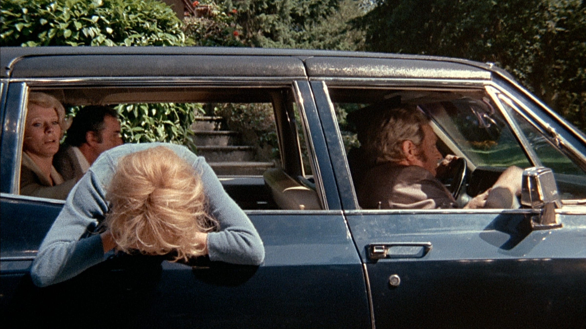
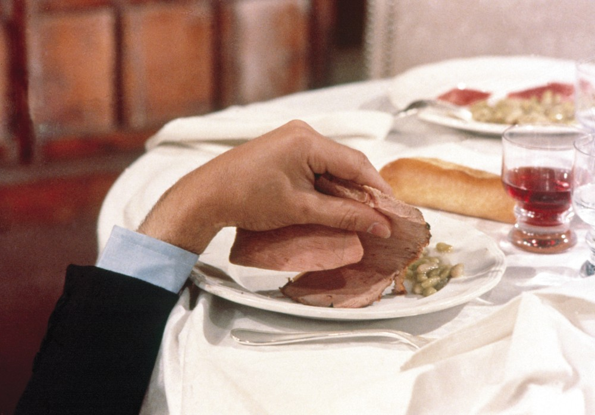
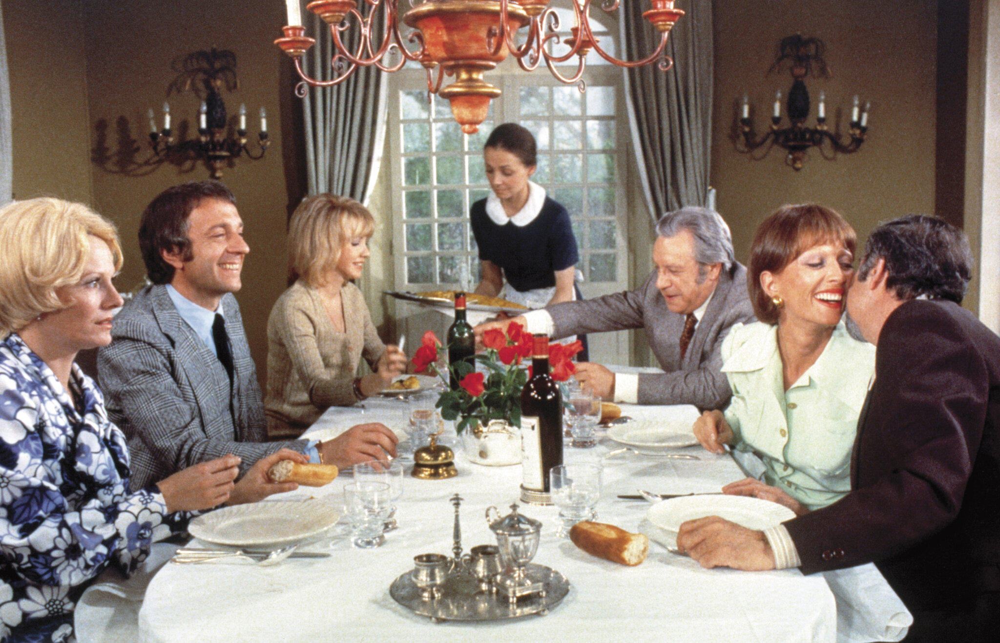

Whit Stillman: The Discreet Charm of the Bourgeoisie
"(no, seriously)"
by: Elliot K.
02/23/2023, featured in Issue Two: Depths of Cinema
Image from The Discreet Charm of the Bourgeoisie (1972)
In the 1990s ‘irony’ was both expanded and degraded through a steamrolling expansion of the word’s meaning. Alanis Morissette is the obvious example; as we all know that “rain on your wedding day” and the like isn’t ‘ironic’, but perhaps that fact itself is the irony. Are you being sarcastic dude? I don’t even know anymore.
Aided by, and in turn of aid, the rise of irony was a concurrent rise of American indie cinema. After a flush of underground hit films (Reservoir Dogs; sex, lies and videotape) it became in vogue for American studios to fund, through subsidy companies, the work of a new generation of auteurs. Whilst the filmmakers of the 1960s and ‘70s were the first to be educated by older cinema, the writer-directors of the ‘90s were educated by their forefathers’ educations, resulting in something of a postmodern approach. Pulp Fiction, the defining movie of the era, is renowned as a bastion of cool, but even in the movie’s most famous dance scene there is a distinct veneer of irony—nobody is supposed to take the lame kitschy nostalgia of Jack Rabbit Slim’s seriously. The postmodernists are attracted to irony due to its mild subversion, its ability to “hollow out a character or idea” through negation.
Whit Stillman, a preppy East Coast liberal, and master of the modern comedy of manners, occupies a unique place within this generation. He would probably feel uncomfortable being shoehorned into that group, or any. (In interviews he has sung the praises of Mumblecore, though admits he has never actually seen any such films, a move not entirely unfamiliar to fans of his debut film Metropolitan. 3) His artistic lineage stems more from Jane Austen, whom he adapted in both literary and cinematic form in 2016 after years of flirtation and reference. He has confessed (to the Jane Austen Society of North America no less) that he would take frequent breaks from writing early in his career, “cleans[ing] the palate” with a few pages of Pride and Prejudice. 4) Another source of common comparison is Woody Allen, a more frequent chronicler of wealthy New York wit, however whilst Allen’s films centre on a financially self-sufficient, often Jewish, middle class, Stillman isn’t afraid to directly address the upper class—a class most Americans didn’t believe existed.
Stillman was, and remains, politically, ideologically, visually, and sartorially at odds with his contemporaries. His films are, as described by Peter Augustine Lawler, “Socratic, Christian, and at least ambiguously conservative”.6 Small ‘c’ conservative that is, his father was an advisor to Kennedy after all, conservative as he seeks to ‘conserve’ the seemingly archaic values and behaviours of ‘old money’. There seems to be an impression amongst some audiences and critics that Stillman embodies typical ‘90s irony, but rather than indulging in sardonic pastiche Stillman wears his irony lightly, like his literary forebears. This may stem from a reluctance among a typically left-leaning ‘indie’ audience to acknowledge that the films they cackle at may, in fact, be celebrating the charms of the upper class, or condemning anti-NATO sentiment. In Metropolitan, the viewer scoffs at Charlie’s lament over the misleading title of Buñuel’s The Discreet Charm of the Bourgeoisie, but by the film’s climax we are morally united behind the conservative members of the Sally Fowler Rat Pack as they pick on Rick von Slonicker, the preening European breaking up their group. Perhaps there is something of a discreet charm.
Image from The Discreet Charm of the Bourgeoisie (1972)
The irony of Metropolitan is immediately apparent to most viewers: a movie about super wealthy people made for almost no money at all. I am not the first critic to note that there’s something of an early Éric Rohmer to the short shot composition and general visual aesthetic of the film, but these are not spunky young Parisians. To the Rat Pack (or ‘Urban-Haute Bourgeoisie’/‘UHB’, another, frankly ridiculous, name they are given,) “orgy week” is played out in a slightly stale game of strip poker, and drug taking is done quietly in the corner. Nick Smith (Chris Eigeman), the group’s de facto leader and pompous wit-in-chief has a self-deprecating streak that may distract from the sincere enjoyment he takes in playing bridge and finding suitable bachelors for the young women of the Pack. Eigeman, whose performances are one of the linking characteristics of the ‘doomed- bourgeois-in-love’ trilogy which kickstarted Stillman’s career, is pivotal to the charm of these films, perfectly translating the ‘loveable dick’ persona of Bill Murray and his ilk over to a more ostensibly highbrow environment. Whether he’s the charismatic spokesperson of Metropolitan, the earnest patriot of Barcelona or the drugged-up Don Juan of Disco, he imbues his performances with just the right level of self-awareness.
Rather than Nick Smith, or even audience surrogate Tom Townsend, the film receives a moral compass through Audrey Rouge (Carolyn Farina), the most virginal of the group’s female contingent. Drawn to Tom, she claims she hasn’t experienced any kind of romantic attachment previously, though upon sharing with Tom her passion for classic literature (Austen, of course) she is struck down by Townsend’s pseudo-intellectual dismissal of Mansfield Park based on Lionel Trilling’s essay (he has not read the book or many others for that matter). The fact that Tom is even misunderstanding the thrust of Trilling’s essay is a further punchline for those in the know. Despite this, she continues her pursuit of a man who openly mocks her lifestyle. As Joseph Alulis notes in his essay ‘In Defense of Virtue: Whit Stillman’s Metropolitan’ , Audrey stands out as a character of particular virtue due to having not just an awareness of the anachronistic society she inhabits, but the respect she has for the conventions of the bourgeoisie.7 Very Austen, and Stillman acknowledges this, such as in the aforementioned Society interview: “the idea that you cannot have an innocent, virtuous heroine today sort of made me think, “Well, yes there can be one.” And so my Audrey character became a kind of Fanny Price.” It feels like something of a mission statement.
Barcelona and The Last Days of Disco express sentiments similarly against the grain. Set at the end of the Cold War, Barcelona may give tacit admissions to destructive CIA tactic but it’s impossible to interpret many scenes, and the character of Ramon at large, as anything other than a critique of quasi-Marxist anti-Americanism, especially when the film ends with a scene of two beautiful Spanish women charmed by the great lakes of Chicago. The latter picture takes a stance no less controversial in the 1990s: maybe disco was good? Granted, the film takes place in the dying days of the movement, in clubs comprising many young professionals who have snuck in higher-ups for a bonus, but the social harmony woven through Studio 54’s panorama of dancing and ‘pairing off ’ is nonetheless presented with nostalgic joy. There is a dramatic irony how Jimmy and Josh, the most outspoken disco fans of the ensemble, are the pair most responsible for the movement’s downfall. The police department’s crackdown on the disco scene and the subsequent club closures are presented as justice being done (again, small ‘c’ conservative), and we are left to ruminate on the awkward shuffles and sexually transmitted diseases of disco with the characters. Much like in Metropolitan, Stillman’s prowess as a storyteller comes into vision as he uses his understanding of human interaction and wordplay to instigate reevaluation from an audience.
Following a broadly unfruitful decade in Paris, Stillman returned to filmmaking in 2011 with Damsels in Distress, the first time his work played into a well-established genre. Frat/sorority movies have not been ‘in’ for a long time, but even if there was still a market for such comedies I doubt they would be frothing at the mouth to see Whit Stillman and Greta Gerwig’s take on the formula. Some of the discourse surrounding the film upon its release echoes that which surrounded the release of PT Anderson’s Punch-Drunk Love in 2002: is this meta-commentary on such a lowly subgenre from the auteur? Perhaps it’s nothing deeper that PTA/Stillman quite like romantic/ college comedies and wanted to dabble in it.
Image from The Discreet Charm of the Bourgeoisie (1972)
Damsels in Distress is probably the *least* beloved of Whit’s films and it probably is his worst. The so-called trilogy can be enjoyed by viewers who perceive Stillman as having his tongue firmly planted in his cheek, as well as those taking a more earnest approach. One’s enjoyment of Damsels in Distress rests on the viewer possessing a certain wide-eyed sincerity going in, as they are expected to readily accept the (seemingly surreal) theses of the film: college bros are so stupid they deserve our sympathy and education; dance crazes are the 20th century’s most lasting cultural contributions, and the smell of a good motel soap really can heal a heartbreak. Thus the film can take a while to warm to and didn’t seem to attract many unsuspecting new disciples, but again the trickery of the subtle reevaluation is at work in the background. I, for one, was baffled by the film’s comedic timing (as well as Megalyn Echikunwoke’s British accent) but by the end…. Thor can do the Sambola? Fuck yeah! In the context of this analysis, it’s almost frustrating that Stillman’s latest film, Love & Friendship (2016) is so undeniably lovely and universally acclaimed. It’s probably for the best, on the other hand, that his attempts to make films about Jamaican prayer music and the Chinese cultural revolution fell through. Stillman is a filmmaker who is at his best inhabiting a particular world—the thought of him writing a character without a trust fund (or the 18th-century equivalent thereof) is jarring. Nevertheless, we should be grateful for the work we have, which comprises one of modern cinema’s most curious catalogues. As we saw with the negative reception online to Adam McKay’s environmental disaster- comedy Don’t Look Up last year, earnest liberalism is not the zeitgeist in Trump-cum-Biden’s America, yet appreciating art politically at odds with your beliefs is, of course, essential in any textual analysis.
In Barcelona, there’s a scene which seems, in hindsight, to surmise my essay quite succinctly: Fred (Eigeman’s NATO lackey) professes to Ted (his stuck-up cousin) his new-found love of reading. But, he asks, what is above the subtext? “The text,” replies Ted, “but they never talk about that!” For these characters, there is little to differentiate between text and subtext, in fact,“they appear to have no subtext at all”.9 Particularly in the 1990s, there’s something to be celebrated in that: if Whit Stillman were to direct a remake of The Discreet Charm of the Bourgeoisie, Charlie would be much less disappointed.